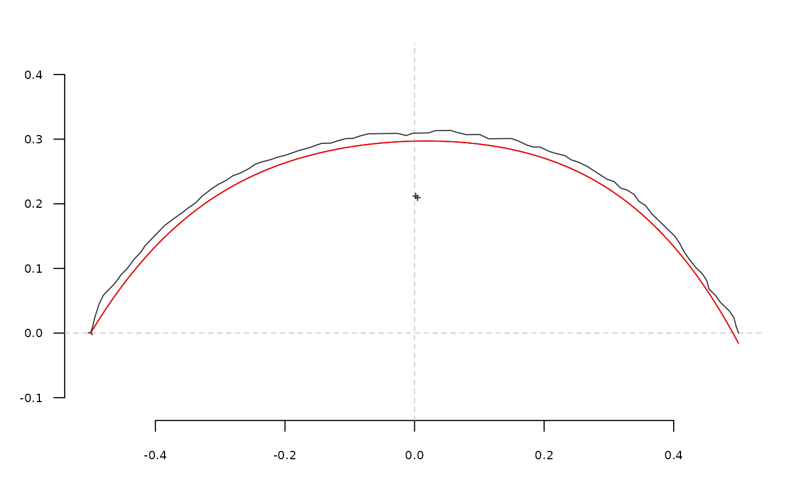

Calculates orthogonal polynomial coefficients, through a linear model fit (see lm), from a matrix of (x; y) coordinates or a Opn object
Arguments
- x
a matrix (or a list) of (x; y) coordinates
- ...
useless here
- degree
polynomial degree for the fit (the Intercept is also returned)
- baseline1
numeric the \((x; y)\) coordinates of the first baseline by default \((x= -0.5; y=0)\)
- baseline2
numeric the \((x; y)\) coordinates of the second baseline by default \((x= 0.5; y=0)\)
- nb.pts
number of points to sample and on which to calculate polynomials
Value
a list with components when applied on a single shape:
coeffthe coefficients (including the intercept)orthowhether orthogonal or natural polynomials were fitteddegreedegree of the fit (could be retrieved throughcoeffthough)baseline1the first baseline point (so far the first point)baseline2the second baseline point (so far the last point)r2the r2 from the fitmodthe raw lm model
otherwise an OpnCoe object.
Note
Orthogonal polynomials are sometimes called Legendre's polynomials. They are preferred over natural polynomials since adding a degree do not change lower orders coefficients.
Examples
data(olea)
o <- olea[1]
op <- opoly(o, degree=4)
op
#> $coeff
#> (Intercept) x1 x2 x3 x4
#> 0.20937101 0.01991936 -0.95319289 -0.03075138 -0.11975200
#>
#> $ortho
#> [1] TRUE
#>
#> $degree
#> [1] 4
#>
#> $baseline1
#> [1] -0.5 0.0
#>
#> $baseline2
#> [1] 0.5 0.0
#>
#> $r2
#> [1] 0.9986415
#>
#> $mod
#>
#> Call:
#> lm(formula = coo[, 2] ~ x)
#>
#> Coefficients:
#> (Intercept) x1 x2 x3 x4
#> 0.20937 0.01992 -0.95319 -0.03075 -0.11975
#>
#>
# shape reconstruction
opi <- opoly_i(op)
coo_plot(o)
coo_draw(opi)
lines(opi, col='red')

# R2 for degree 1 to 10
r <- numeric()
for (i in 1:10) { r[i] <- opoly(o, degree=i)$r2 }
plot(2:10, r[2:10], type='b', pch=20, col='red', main='R2 / degree')